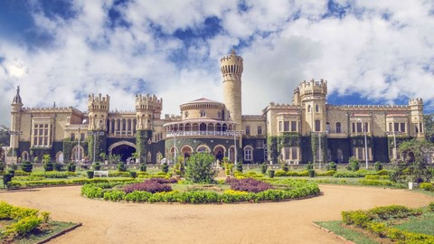
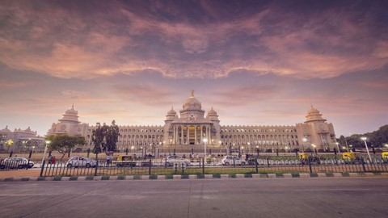
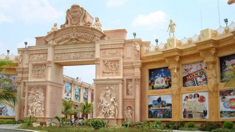
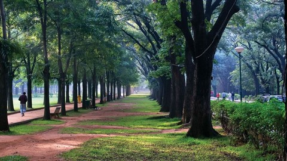
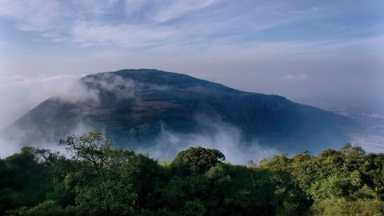

The capital of Karnataka State, Bengaluru, also known as the 'City of Gardens', is one of the most attractive cities in India with its beautiful parks, avenues and impressive buildings. Historically known as Vengaluru, Bendakaluru (village of boiled beans) and as the anglicized Bangalore, Bengaluru has moved to be city that is cosmopolitan in nature and a nerve center of the Arts and Culture as well. The once-sedate cantonment settlement of the British has now spread way beyond the mud fort and the four towers constructed by Kempe Gowda in 1537. With its booming economy and racy lifestyle, the capital of Karnataka has metamorphosed from a sleepy Garden City into one of India's fastest growing, accommodating and cosmopolitan cities. Bengaluru is a city of contrasts, going by several other aliases: India's Silicon Valley, Pub City, Shopper's Paradise, Garden City, Air-conditioned City, Gourmet's Delight, Pub Hopper's Paradise, Pensioners Paradise, IT and BT City and Shopper's Hot Spot. Surrounded by weekend getaways, Bengaluru makes an ideal hub for visitors who want to travel to the many hill stations and coastal towns of South India.
|
 |
Bangalore PalaceSituated in the heart of the city, in the Palace Gardens, Bangalore Palace is a place worth visiting. This palace was constructed in the year of 1887 by the Wadiyar Dynasty. Known for its mesmerizing architecture, beautiful wooden carvings, this palace captivates all its visitors with its incomparable beauty. Built in the Tudor-style architecture, it resembles the medieval castles of Normandy and England to some extent. It is said that King Chamaraja Wodeyar of Wodeyar dynasty was quite impressed by the Windsor Castle of London during one of his trips to England. Hence he built the Bangalore Palace on the similar lines. |
|
 |
Vidhana SoudhaOne of the most famous landmarks of Bangalore, the Vidhana Soudha houses the State Legislature and the Secretariat of Karnataka. The magnificent white building is spread over 60 acres of land and boasts of Mysore Neo-Dravidian architecture and has incorporated various elements of Indo-Saracenic and Dravidian Styles. It is also the largest Legislative building of India. It was built over a period of five years from 1951-56, and was conceptualized by Kengal Hanumanthaiah. The foundation stone was laid for Prime Minister Pandit Jawaharlal Nehru. |
|
 |
Film CityInnovative film City is located on the Bengaluru-Mysore Highway, around 30 km from the centre of the city. It is an ultimate tourist destination in India, offering world-class entertainment with attractions such as “Ripley’s Believe It Or Not” & Louis Tussauds Wax Museums. Explore the extinct species at the amazing Dino Park & Fossil Museum. Enjoy the water fun at the man-made beach and water park. Unlimited games and rides such as Roller Coaster & a double decker Carousel, Mini-golf, Go-karting, etc. with India’s most interactive Haunted Mansion. It has lush green surroundings against a beautiful natural lake with ideal shooting locations, Bengaluru’s largest Amphitheatre to hold concerts, Cultural activities & much more. |
|
 |
Cubbon ParkIt is one of the prominent parks of Bangalore, the Cubbon Park with about 300 acres area, claims to be the green zone of the city. Replete with landscaped gardens, blooming flowers and tall shady trees, the garden provides a fresh breath to its visitors. Well equipped with long and wide jogging tracks, walking lanes and comfortable benches, this is the first place visited by Banga- loreans in the morning and after a tiresome day in the evening. |
|
 |
Nandi HillsNandi Hills is known for its scenic beauty and natural charm. It is a popular summer resort perched at 1479 m with an enchanting scenery. The town is surrounded by lovely hills and valleys and consists of sprawling vegetation. The scenic beauty and opportunities for trekking in the nearby environs (Skandagiri) has led to the increased inflow of tourists. Tourists come to Nandi Hills for the beautiful mountains, waterfalls, streams and other scenic picnic spots. Those with an eye for the Birds and Ornithology, will find Nandi Hills fascinating. Nandi hills is also the source for Palar, Arkavati, Penner and Ponnaiyar rivers that flow towards the plains. |
Idli,Vada,Dosa
The south Indian delights are easily available, affordable, and tasty. They are best served with hot sambhar and coconut chutney.
Breakfast at Mavalli Tiffin Room
More popularly known as MTR, this is one of Bangaluru’s oldest (est 1924) and most well known restaurants. Try the Bisibele Bath, Rava Idlis, Masal Dosas and Chandrahara (a sweet served only on Sundays) and of course Filter coffee.
Obbattu
Obbattu is a local, popular street food in Bengaluru. It is one of the delicacies served piping hot with ghee during festivals. It is a rich dish and is served particularly during festivities.
Mysore Pak
Mysore Pak is south India's most iconic sweet. The sweet takes its name from Paka the local word for sugar syrup. It is made of only three ingredients- clarified butter, chickpea flour and sugar.
Sandalwood Artefact
Karnataka has a huge forest-belt and sandal wood carvers are found in Bengaluru and Mysore along with other places in the region. The cultured wood is used to make a plethora of products like idols of deities to decorative pieces.
Mysore Silk
Mysore Silk sarees originate in Karnataka and are made of one of the purest forms of silk. These sarees are available in vibrant colours and look very classy when draped. Mysore Silk sarees are famous all over the world for their quality.
|
|
AirKempegowda International Airport, Bengaluru, is located about 40 kilometres north of the city and connects to all important cities of India. |
|
|
RoadBengaluru is connected by road to all cities. |
|
|
RailBengaluru is well connected by rail with major cities in India. |
|
|
Map |

.png)
.png)